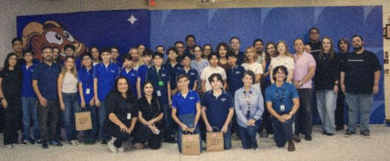

Te lo contamos en video
Aquí se explica de qué se trata el proyecto, y estudiantes de la primera generación cuentan su experiencia.
Necesita internet. YouTube se carga solo cuando pulsas el botón. Si no se reproduce, míralo directamente en YouTube.
¿Qué es CiTIAM Labs?
Es el club de Highpoint donde las preguntas se convierten en experimentos, diseños y proyectos. Su nombre reúne cinco maneras de aprender: Ciencia, Tecnología, Ingeniería, Artes y Matemáticas. Al resolver un problema real, casi siempre hacen falta varias al mismo tiempo.
Trabajamos por generaciones. La primera dejó proyectos que siguen creciendo, y la segunda generación ya está en marcha.

¿Qué hacen los estudiantes?


- Investigan: preguntan, predicen, miden y comparan. Mira los proyectos del club.
- Construyen: pasan de una idea a algo que se puede probar y mejorar.
- Programan: con bloques y con código de verdad.
- Comparten: cuentan lo que descubrieron, también cuando el resultado no fue el esperado.
¿Hasta dónde puede llegar un proyecto?

Un equipo de la primera generación empezó en 2025 con un proyecto llamado EcoTrack. Lo fue transformando hasta crear IRVEN, ganó una mención honorífica en FireCAMP de FireLab en 2026, y hoy se incuba en Future Founders Academy mientras sus integrantes estudian en PrepaTec.
CONOCER SU HISTORIAPreguntas de las familias
¿Tiene que saber mucho de ciencia o de computadoras?
No. Aquí se aprende haciendo y equivocarse es parte del método. Lo importante es la curiosidad.
¿Qué se lleva mi hijo o mi hija, además de un proyecto?
La costumbre de hacer preguntas, trabajar con evidencia, colaborar en equipo, explicar sus ideas y volver a intentar cuando algo no sale.
¿Las actividades son seguras?
Las actividades con plantas, hongos, herramientas o materiales de laboratorio se trabajan con supervisión de una persona docente o adulta. Nuestra regla es clara: nunca se prueban cultivos, hongos ni sustancias desconocidas.
¿Qué pasa con las fotos y los datos en este sitio?
No publicamos nombres de estudiantes. El sitio no usa cookies ni rastreadores, y un resultado de los juegos solo se envía si alguien pulsa PUBLICAR, siempre con un apodo al azar y nunca con un nombre.
¿Dónde puedo saber más?
Pregunta directamente en la escuela. También puedes recorrer este sitio con tu hijo o hija y pedirle que te enseñe su juego favorito.
Para profesores
Todo este sitio se puede usar en clase, y gran parte funciona sin internet. Algunas ideas para empezar:
- Biología y salud: epidemia y vacunas, y un cultivo de hongos con el Hongotchi.
- Física: órbitas y caída libre.
- Química: constructor de átomos.
- Matemáticas: crecimiento exponencial con la leyenda del trigo y estadística con el tiempo de reacción.
- Historia y geografía: el reloj de la Tierra.
- Tecnología: programación con bloques y el taller de código.